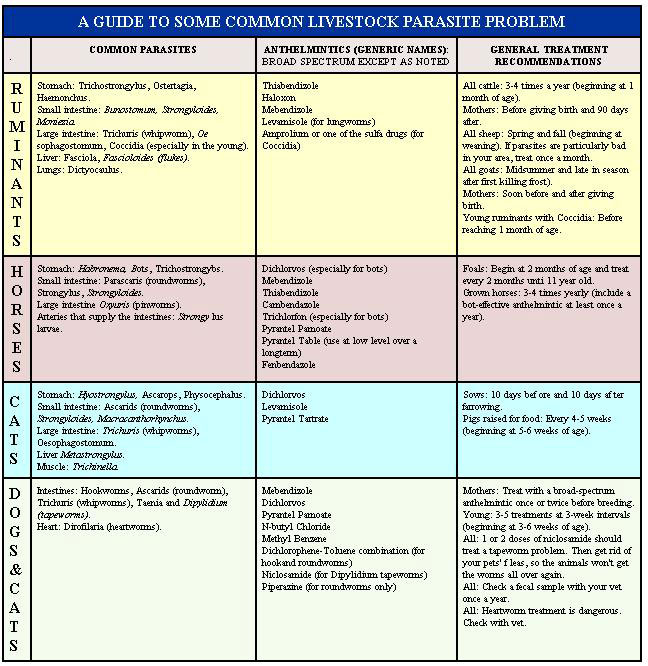

Veterinarian Randy Kidd - concluding the article begun in MOTHER NO. 56 - tells you what to do if your critters are "bugged".
Are your porkers growing poorly (or losing weight)? Do your dairy cows give less milk than they used to? Does your goat have white gums ... or does your mutt mope?
When such "classic" symptoms show up, most any owner knows that his or her critters have internal parasites (commonly called worms). But maybe your animals aren't acting all that sickly ... perhaps they just look a wee bit listless. Heck, maybe the beasts even appear to be as happy as cats in a milking parlor!
However, if you read Part I of this article (in MOTHER NO. 56, pages 76-79), you know that healthy-looking livestock can have serious worm infestations! To put it simply, parasites are the biggest medical problem we veterinarians have to face. So I know from experience thateven when you don't see a single indication of the internal freeloaders-you can be spending money, building feeders, raising thoroughbreds, and in general going to a whole lot of trouble ... all to provide vintage "pastureland" for some hidden (but enormous) herds of worms!
You should understand- before you start tackling these foes-just what parasites do and where they come from. Worms-slimy "spelunkers" that range from microscopic to yardstick size-can invade almost every animal organ. The uninvited visitors will clog hearts, coat stomachs, cause acute bellyaches, block blood circulation, eat your stock's food (or innards), and-in some instanceskill the" hosts" they inhabit.
What's more, the freeloading vermin can strike at any one of several stages in their life cycle. In fact, immature larvae sometimes cause more harm than do "adult" worms ... while seemingly harmless parasite eggs can lie dormant around the place for years, just waiting for the right environment (like ol' Bossy's belly) to come along.
These pests can also attack your animals in a number of ways. Some worm types are handed down-like family curses-through the mother's placenta (or in her milk). Flies can deposit eggs in your pet's fur, mosquitoes can inject the pests into a critter's bloodstream ... or your beast may simply eat an insect or rodent that's serving as a parasite "halfway house".
But (pay attention now) the absolute, number one, main way that animals get worms is through exposure to parasite eggs in the beasts' own manure (and to the small bugs, snails, and slugs that feed on that manure). I can't emphasize this truth too strongly: If your horse, cow, or whatever can smell its own dung, the animal is going to get worms.
All these discouraging facts about parasites should lead you to a couple of basic conclusions. One is that you will NEVER eliminate all worms-or the threat of them-from your pets and livestock. And the other is that you can-and certainly should - do everything within your power to control the pests.
And the best way I know to cut down your parasite population is to consistently follow Dr. Kidd's famous (well, it sure oughta be):
POINT 1: There is a wealth of wisdom in keeping your critters healthy. A good diet, fresh water, clean shelter, adequate bedding, and a bit of affection now and then will help your animals resist worms, and other diseases as well (just as these same preventive measures work for you).
POINT 2: Graze your grass gracious ly. A pasture rotation plan will protect your livestock from constant exposure to their own droppings ... and, therefore, make the critters a lot less likely to become infested with worms. The wandering quadrupeds will also eat better, which (as I said in Point 1) will help make them more disease and parasite resistant.
POINT 3: Manage your manure. Clean all animal living quarters every day ... and do the job right. As we say around the Kidd barn, if you can't sit in it (the stall, that is), it ain't clean.
POINT 4: Pickle those parasites with the proper parasiticide. Identify your worm problems, then ROUTINELY AND CONSISTENTLY attack them with an effective anthelmintic. Consistency is important ... because the medicine may knock out all the mature worms in one application but leave the larvae unscathed. It takes repeated treatments to catch all the developing "waves" of worms.
POINT 5: Analyze your efforts. Have a veterinarian run fecal checks at least once a year ... two months or more after your last anthelmintic treatment (so the vermicide has had a chance to wear off). What the yet learns-when he or she examines the small, fresh sample droppings you bring-will tell you how well (or how poorly) your treatment attempts are going. The manure test will also let you know exactly which parasites you have to fight in the first place. (By the way, one sample from each kind of animal you raise will be plenty ... you won't need to cart in a collection of the pungent pellets,)
All right, you've taken care of your animal's pastureland, stall, and general well-being, and you've also taken your manure tidbits down to a vet and had that doctor analyze your worms. At last the two of you are equipped to pick out a real parasite-walloping vermicide.
(NOTE: This article will give you general information that can help you understand what you and your vet are doing ... it will not teach you how to choose your own anthelmintic. However, if you do unsuccessfully try a do-it-yourself treatment anyway-and then end up consulting a "heifer healer"-PLEASE be kind enough to tell the doctor what medication you used. It may help him or her save your critter's life.)
The type of anthelmintic that you and your doc should choose is one that is safe, economical, easy-to-use, and eliminates many kinds of parasites (a broad-spectrum anthelmintic). Most of the newer "scattershot" wormers satisfy these characteristics.
But, before you administer a ny anthelmintic, please-for the sake of your beasts' (and your own) health-take the following precautions:
KNOW WHAT YOU ARE DOING ... READ AND REREAD THE DIRECTIONS ON THE MEDICINE'S LABEL UNTIL YOU THOROUGHLY UNDERSTAND THEM.
USE THE CORRECT DOSAGE- It Is possible to actually kill an animal if you use too much parasiticide or give the medicine too often. Twice as much is NOT twice as good.
BE PARTICULARLY CAUTIOUS ABOUT USING ANTHELMINTICS ON SICK ANIMALS, YOUNG ANIMALS, PREGNANT ANIMALS, OR LACTATING ANIMALS (critters giving milk).
DON'T DRINK ANY MILK FROM A PARASITICIDE-TREATED ANIMAL UNTIL ALL TRACES OF THE DRUG ARE GONE FROM THE BEAST'S MILK. Your vet can tell you the "withdrawal time" for a specific anthelmintic.
DON'T ADMINISTER ANTHELMINTICS IN YOUR LIVESTOCK'S FEED UNLESS YOU CAN BE ABSOLUTELY CERTAIN THAT EACH AND EVERY ANIMAL EATS ITS "CHOW" AND GETS ITS FAIR SHARE-AND ONLY ITS SHARE-OF THE MEDICINE.
Once you've absorbed all those precautionary words, you'll be ready to help your animals absorb something ... namely, a good, broad-spectrum worm medication. Because this whole disease and treatment topic can get pretty danged complicated, I've worked up an easy-to-read anthelmintics chart to accompany this article. The table lists some common parasites, appropriate vermicides, and sound treatment programs for the standard homestead livestock and pets.
Remember that-by necessity-all the information I'm giving you is very general. There're plenty of good anthelminties that I won't be mentioning ... and new ones are being developed all the time. Your own vet will know which particular worm killers work best for your specific parasites. (After all, the area where you live may have entirely different worms from my home territory.)
Oh, and one last thing. To keep these pages squeezed down to one article (instead of letting them fill out the whole magazine), I've only mentioned a few of the many varieties of parasites. I sincerely hope that any worm whose name I leave out will forgive me. Lord knows, I don't need any worms mad at me.
Cattle, sheep, and goats are all ruminants ... that is, animals with four stomachs (their habit of chewing their own cud gives us that word for pondering and repondering a thought, ruminating). These contemplative gnawers can get infested with a page-filling list of internal parasites ... but fortunately, most mod ern broad-spectrum anthelmintics are effective against all sorts of uninvited ruminant "guests".
One nasty disease that immature ruminants sometimes catch is called coccidiosis. The frisky young'uns will probably shake off this single-celled parasite on their own if they get some sunshine and adequate pasture room. But coccidiosis can be fatal. Personally, I wouldn't wait around to see whether the critters drop the bug or the bug drops them. If your newborns get the "runs"-or if your herd has had coccidiosis problems in the past-treat the cudchewing youngsters quickly. In fact, a sensible preventive measure would be to take a fecal sample from any newborn ruminant to your vet for analysis.
Now, I'll tell you a bit more about each of these barnyard beasties.
CATTLE. As the chart shows, all cattle should be wormed three to four times a year, beginning when they are about one month old. Of course, you won't have any trouble medicating the dairy mooers you handle every day ... but it isn't so easy to treat freeroaming beef cattle. Some of those nomadic hoofers get pretty "unhumanized", and trying to hold them still-long enough to, say, squirt a thiabendizole paste on their tongues-is about as easy as shampooing a porcupine. [EDITOR'S NOTE: Randy wrote about proper handling techniques in "Restrain That Beast", MOTHER NO. 52, pages 84-87. / You'll probably have to settle for worming the beef critters whenever you've got them restrained for some other reason (like castration or vaccination).
Mother cows should be treated with anthelmintics just before they calve (to prevent them from passing the worms to their offspring) and again 90 days later. Paste or bolus (big pill) forms work well. Remember ... don't drink any of your cow's milk until the time period during which the vermicide can be detected in the milk is over, Also, be sure (by following your vet's advice) that the parasiticide you use won't ''dry up" your cow and make her stop producing milk.
SHEEP. Parasitism is the number one health problem in sheep ... and is directly related to how well they are fed, so it pays to indulge the appetites of your woolly friends. Sheep worms also experience spring rise . . . in other words, the pests really come out swinging after winters over. Therefore, don't forget to give your flock-every year-a thorough intestinal "spring cleaning".
COATS. These are such argumentative creatures that adding the anthelmintic to their feed-and making certain each one eats a fair share-is probably the easiest way to worm your Nannies and Billies. The feeding technique is made especially convenient by the fact that most broadrange worm medicines come in easy-to-eat granular and liquid forms.
Horses can carry a cavalry of internal riders . . . so many that you may need to worm the steeds pretty clanged steadinessly just to stay on top of their parasite problems. That's one reason why I put such a long list of horse anthelmintics on the bug-and-drug chart: so you can switch your "weaponry" often enough to keep the vermin from developing a resistance to any one medication. (The other reason is that-since you don't milk horses-you can use a greater variety of anthelmintics on them than can safely be administered to ruminants.)
Among the nastiest of the equestrian parasites are the larvae of the strongyle bloodworms. These "bugs" migrate into the arteries that supply the small intestine, and thus the parasites can actually block off some of a horse's blood flow ... causing acute intestinal pain (colic).
Bots (the larvae of the Gasterophilus fly) are an equally nagging juvenile invader. The hardcoated, sluglike shysters can cover almost the entire surface of a horse's stomach. Horses ingest the parasites by innocently chewing or licking the spotlike-and visible to the human eyeeggs ... which flies deposit on the critters' slick coats.
And-just in case you haven't heard enough equine afflictions-another horse worm you can sometimes see is the Oxyur s, or pinworm. These lower intestine burrowers may actually crawl out of your steed's backside. If your horse has a ratty tail (because the animal's been scratching its southbound end a lot), this pointy parasite may be the reason.
Since animals that have contact with their own manure are most likely to get worms, pigs-which are renowned for living the "sty life"-get plenty of parasites. I've filled a quart mason jar with the worms removed from just one sow! To keep your swine fine and healthy, you'll have to worm the creatures on a regular basis. And-because the porky "garbage disposals" will consume almost anything-the simplest way to get an anthelmintic into a pig's stomach is just to add the medicine to its food.
Almost all puppies are born with some kind-and often lots of kinds-of worms. So be sure to treat your canine babiesand your expectant dog mothers-conscienously. Piperazine is a common roundworm medicine that works well (remember, it only kills mature roundworms, so you have to use it repeatedly). But piperazine is a specific-not a broadspectrum-anthelmintic and won't affect any other worms your pups may be harboring.
Hookworms are a very severe example of those "other'' dog botherers. These "vampires" enter by penetrating the skin and can drain enough blood to make the pups anemic ... or even kill them. Check young dogs-at four to six weeks of age-for this intestinal parasite (or even sooner after birth if you've had hookworm troubles in the past).
Another common canine parasite-found in dogs of all ages-is the tapeworm. Dogs catch these well-named (they may be five feet long) scoundrels in two ways. The Taenia tapeworm larvae inhabit the body of a rabbit or rodent, so-if your hound likes to eat wild critters out back-it may well already be hosting this pest. And Dipylidium tapeworm eggs use fleas as their "pass card" for intestinal entrance. When your canine chews-and accidentally swallows-an aggravating skin-biter, the pooch's aggravation may have just begun.
You can tell if Fido has either variety of tapeworm by looking for white, rice like worm segments in your dog's feces. If you see these egg-harboring body pieces, medicate your dog immediately. However, don't use one of the older tapeworm remedies. Those outmoded anthel mintics knock off most of the tape
worm's body (the segments will dramatically appear in the dog's waste ), but the parasite's many-hooked head remains embedded in your suffering pooch's intestinal wall ... to grow and strike again. The newer remedies "go for the jugular" and kill the tapeworm's head (some even dissolve the whole "measure" so you won't see any segments passed in the animal's feces at all). Niclosamide is a very effective and safe example of the more modern drugs available (this medicine is a specific anthelmintic against the flea-spread Dipylidium tapeworm.)
One canine problem you definitely should not treat at home is heartworms. These mosquitospread larvae mature into spaghetti- strand monsters right in the chambers of your dog's heart ... and inhibit the pumping of the blood in this dangerously hard-to-treat organ. So try to prevent the problem before it starts by finding out-from your vet-if heartworms are prevalent in your area and what you can do to prevent them (the test for these parasites is done from a blood-rather than a fecal-sample).
Cats can get most of the same parasites that dogs do, but-because of Tabby's renowned (and effective) cleaning habits-felines have a lot less worm trouble than most other specks. One parasite that can easily trouble cats, though, is tapeworms (cats get'em just as dogs do, by eating animals or swallowing fleas). In fact-if fleas are a big item in your area-you may need to treat your eat for tapeworms every month.
What I'm trying to get across by telling you these discomforting facts is just how fortunate we are today. Many of the anthelmintics available now arc safe (WHEN USED CORRECTLY) and are effective. So don't let parasites drain your critters (and your pocketbook).
I've written this message so many times that my pen is winded, but dammit , it's true ... you can solve your parasite problems! You just have to stick-conscientiously-to the first three points of the PARASITE CONTROL PROGRAM ... and then periodically use an efficient anthelmintic.
Further information about how you can keep your farm animals and house pets healthy can be found in the following sources:
1." Common Sense Control of Internal Parasites in Ruminants", MOTHER NO. 19, pages 38-41.
2."Worm Your Livestock With Snuff", MOTHER NO. 44, page 95.
3."How to Give That First Injection", MOTHER NO. 43, page 90a (poster).
4."Restrain That Beast! ", MOTHER NO. 52, pages 84-87.
5."You Can Too Give That Animal an Injection", MOTHER NO. 53, pages 9297.
6."Be Your Own 'Animal Medicine Man' ", MOTHER NO. 54, pages 75-79.
7."Restrain and Medicate Your Homestead Horse", MOTHER NO. 55, pages 74-77.
8."How to Deal With Internal Parasites, Part I", MOTHER NO. 56, pages 76-79.
(Back issues of this publication are available - for $2.50 each plus $1.00 shipping and handling per order - from THE MOTHER EARTH NEWS (restricted) , P.O. Box 70, Hendersonville, North Carolina 28739.)
|
 |
|
|